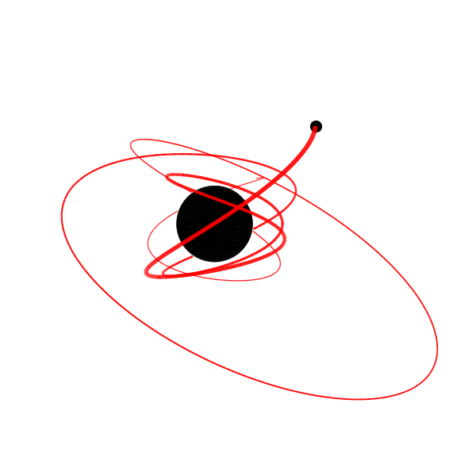
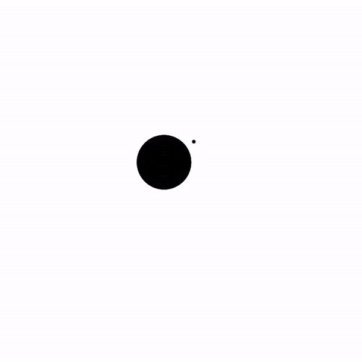
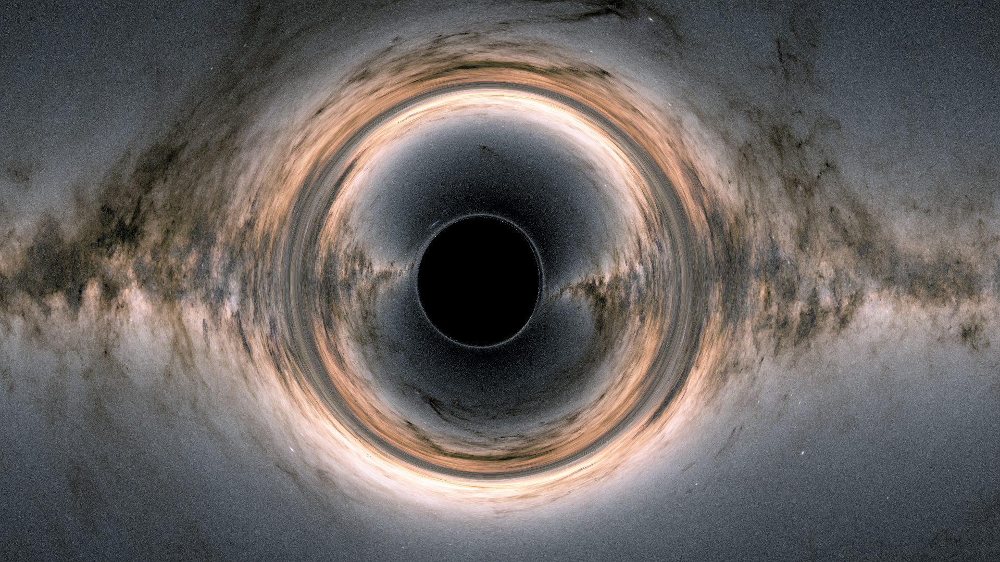

Overview#
KerrGeoPy is a python library for computing bound timelike geodesics in Kerr spacetime. It is intended for use in computing orbital trajectories for extreme-mass-ratio inspirals (EMRIs). It implements the analytical solutions for plunging orbits from Dyson and van de Meent, as well as solutions for stable orbits from Fujita and Hikida. The library also provides a set of methods for computing constants of motion and orbital frequencies, and can generate plots and animations like those shown below.
Additionally, analytical solutions for lightlike geodesics are provided. They are implemented from Gralla and Lupsasca with distant limit from Podrápský. The library also includes a utility class for rendering the black hole’s shadow on stellar background.






Acknowledgements#
The work on lightlike geodesics was supported by the Student Faculty Grants (SFG) program at the Faculty of Mathematics and Physics, Charles University.
Installation#
Install using Anaconda
conda install -c conda-forge kerrgeopy
or using pip
pip install kerrgeopy
Note
KerrGeoPy uses functions introduced in scipy 1.8, so it may also be necessary to update scipy by running pip install scipy -U, although in most cases this should be done automatically by pip.
Certain plotting and animation functions also make use of features introduced in matplotlib 3.7 and rely on ffmpeg, which can be easily installed using homebrew or anaconda.
See Getting Started for basic usage. See the API Reference below or the Modules page for a complete list of classes and methods.
Tutorials
API Reference#
|
Class representing a stable bound orbit in Kerr spacetime. |
|
Class representing a plunging orbit in Kerr spacetime. |
|
Class representing an orbit in Kerr spacetime defined using initial conditions. |
|
Class representing a lightlike orbit in Kerr spacetime defined using initial conditions. |
|
Class representing a distant lightlike orbit in Kerr spacetime defined using initial conditions. |
|
Class representing spacetime around a black hole with mass \(M\) and spin parameter \(a\) |
|
Class used to compute the image of a Kerr black hole as seen by a distant observer, using the escape coordinates of light rays. |
Module containing functions for computing the constants of motion for an orbit in Kerr Spacetime. |
|
Module containing functions for computing frequencies of motion for orbits in Kerr spacetime. |
|
Module containing functions to compute orbital properties from initial conditions |
|
Module containing functions to convert between geometrized units and physical units. |
|
Module containing reusable utility functions for plotting orbits and creating animations |